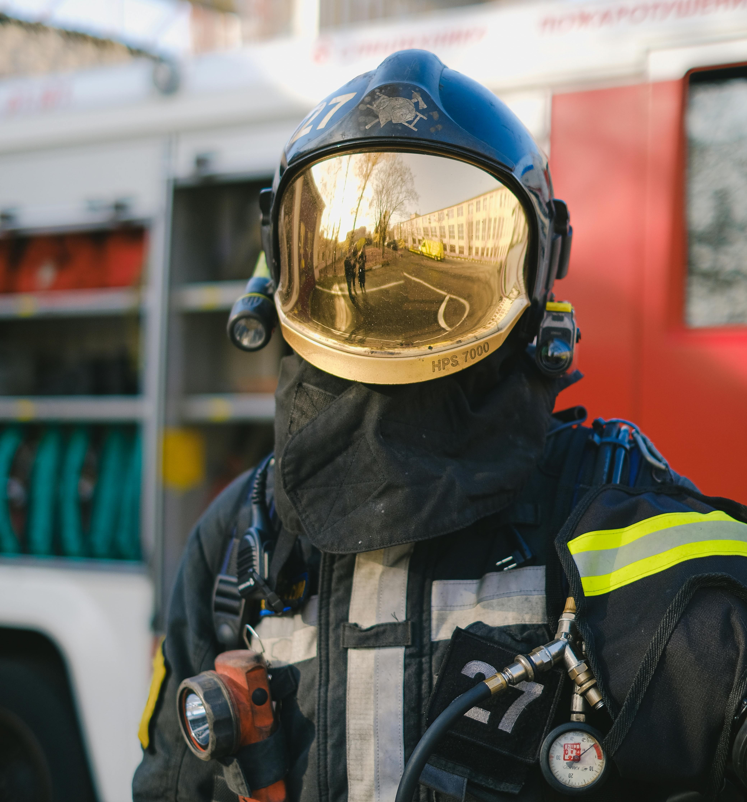

Tipos de Riscos no Ambiente de Trabalho
Identificar os tipos de riscos é essencial para a prevenção de acidentes. Veja os principais:
Riscos Físicos
Ruído, vibrações, radiações, temperaturas extremas, pressão atmosférica.
Riscos Químicos
Poeiras, fumos, névoas, vapores, gases e substâncias tóxicas.
Riscos Biológicos
Vírus, bactérias, fungos, protozoários e parasitas.
Riscos Ergonômicos
Esforço físico intenso, postura inadequada, jornada prolongada, monotonia.
Riscos Psicossociais
Estresse, assédio moral, pressão por metas e conflitos interpessoais.
